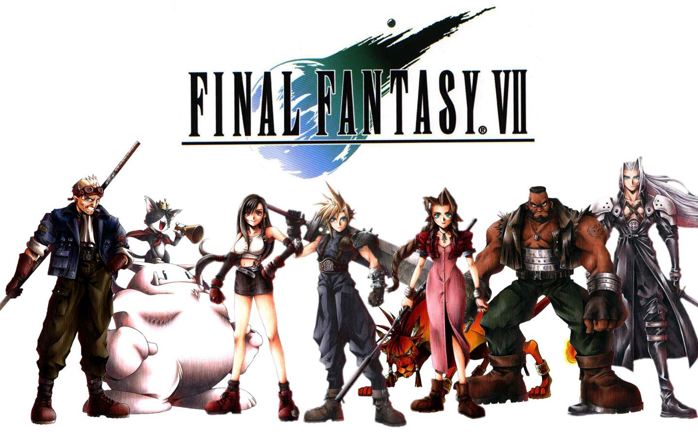

ファイナルファンタジーⅦ
スクウェアがプレイステーション向けに発表した初のソフト。
天野喜孝がイメージイラストのみ担当になり、野村哲也がキャラクターデザインとなった。
ハードがプレイステーションに変わったことにより、フィールドと戦闘画面が3Dになった。町やダンジョンは1枚絵でポリゴンキャラが動くという形である。
シナリオの要所ではムービーも入る。ときにはダンジョンの1枚絵がシームレスでムービーに代わる演出も。
ムービーにはデフォルメの3頭身の場面と、リアルな7-8頭身の場面が混在している。
戦闘システムはFFIV,V,VIでも採用したATBを搭載。
装備品によりアビリティの装着可能数が決まるマテリアシステムを搭載。
敵の攻撃のダメージでゲージがたまり、MAXになると必殺技が使えるリミットブレイクシステム。
スノーボードや陣取りゲームなどミニゲームも多く搭載。かなりやりこみできる内容である。
全世界累計出荷本数1000万本以上。スクウェア・エニックス公称の「最も売れたファイナルファンタジー」である。
後にインターナショナル版を発売。以後のナンバリング作品でインターナショナル版の発売が定番となる。
上記の通りVI以前とVII以後で大きく変更された部分が多く、シリーズの転機となった。
『ニコニコ動画 ニコニコ大百科より』より引用。
URL: http://dic.nicovideo.jp/a/ファイナルファンタジーvii